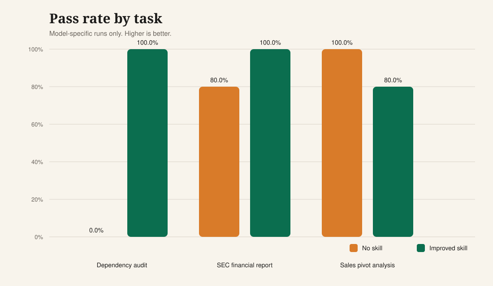
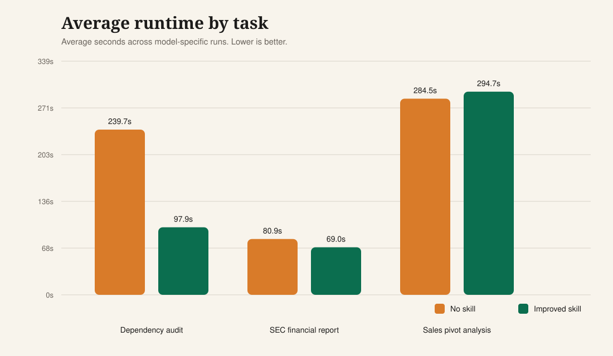
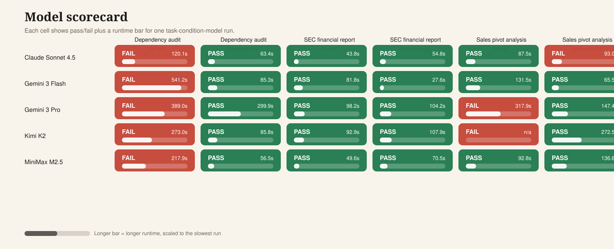
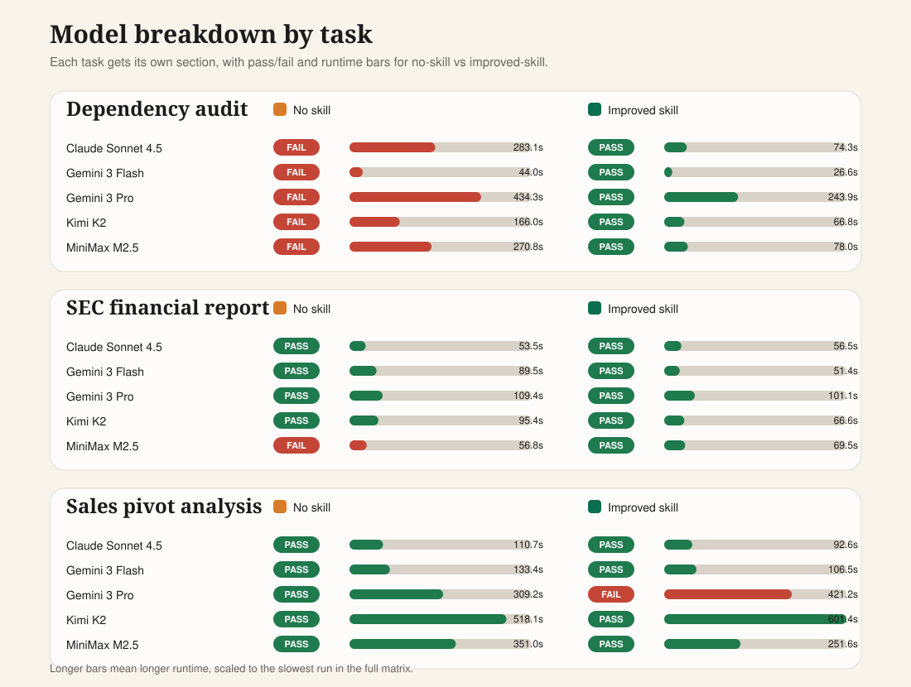

OpenHands Skill Evaluation Results
These visuals summarize the model-specific runs across the three tutorial tasks. They focus on the cleanest comparison points: pass rate, runtime, and per-model outcomes for the no-skill vs improved-skill conditions.
Dependency audit
100% vs 0%
Improved skill vs no skill pass rate
+100 pts
Avg runtime: 97.9s vs 239.7s
SEC financial report
100% vs 80%
Improved skill vs no skill pass rate
+20 pts
Avg runtime: 69.0s vs 80.9s
Sales pivot analysis
80% vs 100%
Improved skill vs no skill pass rate
-20 pts
Avg runtime: 294.7s vs 284.5s



